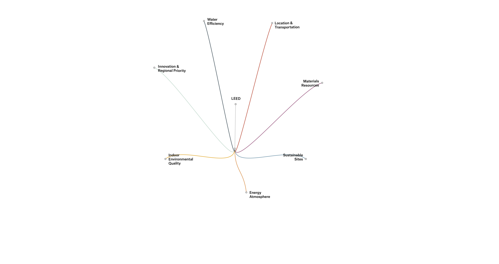
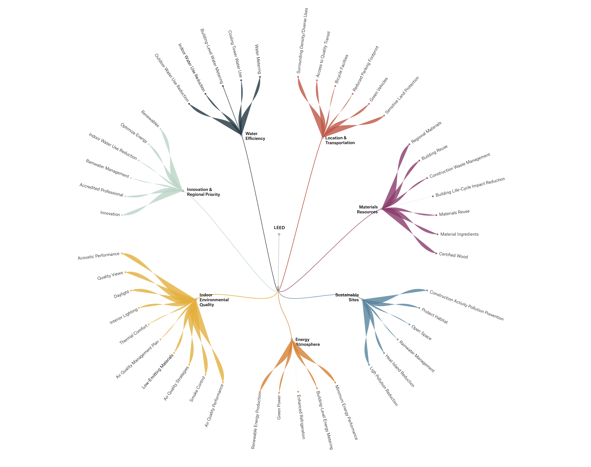
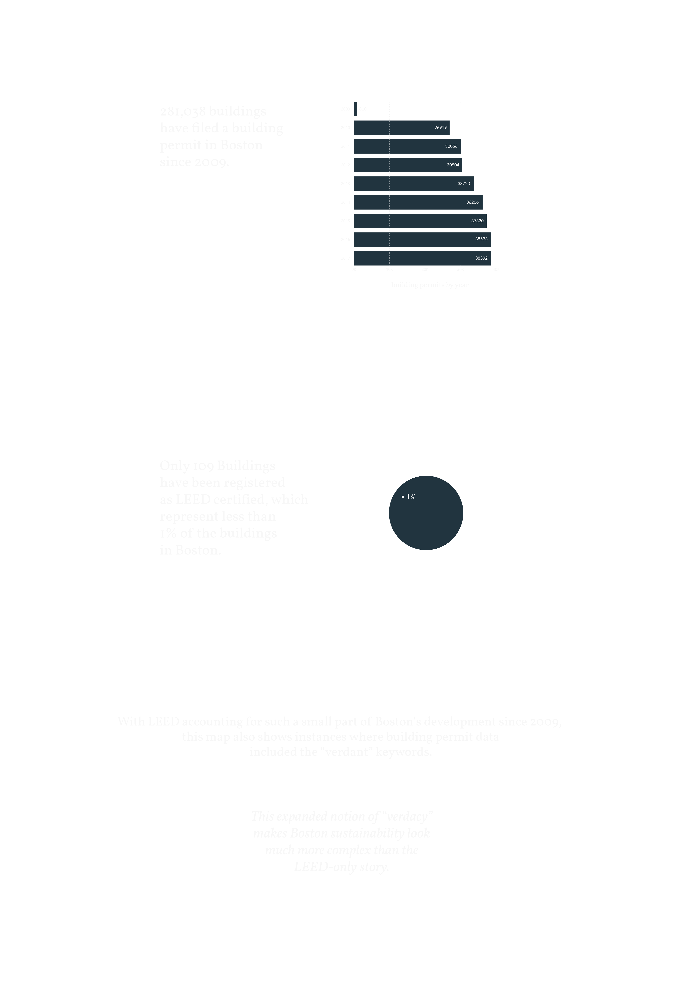
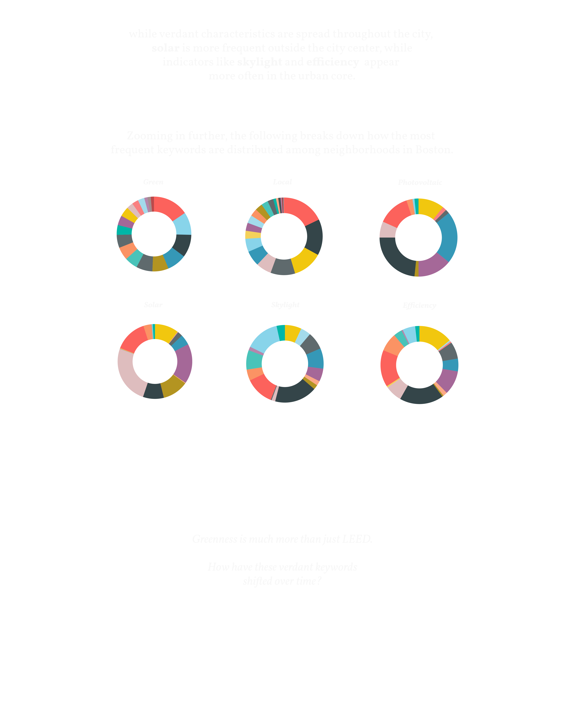
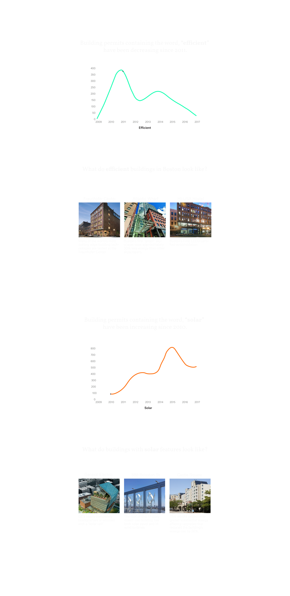
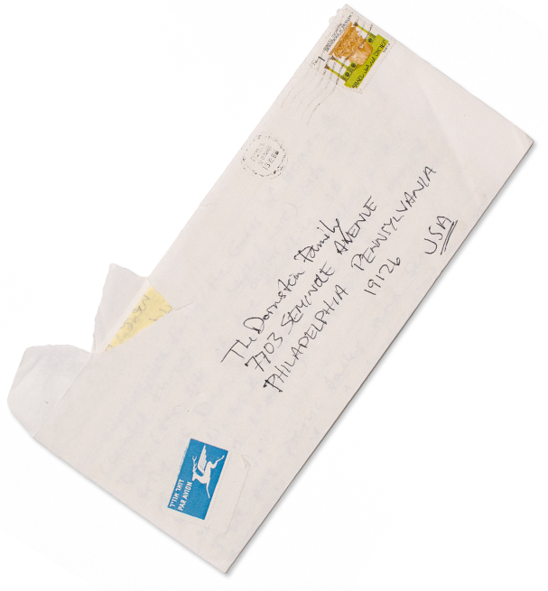

As cities try to grow more sustainably, LEED building certification — Leadership in Energy and Environmental Design — has become somewhat synonymous with “green”. But that doesn’t capture the whole picture. LEED is strict enough that many buildings with green characteristics don’t make the cut.

Using keywords from LEED’s certification categories as a guide, identifying instances of select “green” words within building permit data can help paint a more expansive picture of a city’s sustainable architecture. This more comprehensive version of greenness can be called “verdancy”.

In Boston, development is accelerating at a rapid clip. After adopting Article 37 in 2007, the city’s zoning code now requires that all buildings above 50,000 square feet be LEED Certified. Through this LEED-inspired lens of “verdant” keywords, how has green building changed in Boston since?
This experience was designed for landscape mode. Please rotate your device.

Green Building Locations
Green Building trends after Article 37
Frequency of Green Words
Green Classification
a. Where are the green buildings?
Mapping buildings with “verdant” keywords alongside certified LEED buildings shows just how pervasive green buildings are in Boston.
scroll down


b. Have Green Buildings Changed in the Last Decade?
Since 2007, Article 37 has required buildings over 50,000 square feet in Boston to be LEED-certified. Digitized building records are available from 2009 onward, shedding light on how this effort to make Boston greener has actually been built out. Looking even deeper, at “verdant” keywords, makes it possible to see developing trends in “green” buildings since.
scroll down

Are there other noticeable trends in “verdant” keywords?

c. Frequency of Green Keywords
Since 2009, some “verdant” keywords have cropped up far more than others. How might this influence what building characteristics are associated with “green” buildings?
scroll
Original View of Keywords
As you can see, the keywords solar, efficient, solar electric, and local have the highest frequency in our building permit data.
Aren't you curious to know which keywords are in the smaller bubbles? The LOG of our dataset was taken to show a more comprehensive view of all of the green keywords.
Log View of Keywords
LEED Lens of Building Permit Data
Among the eight Leed Categories, three have the highest frequency in our building permit data - energy & atmosphere, sustainable sister, and indoor quality.